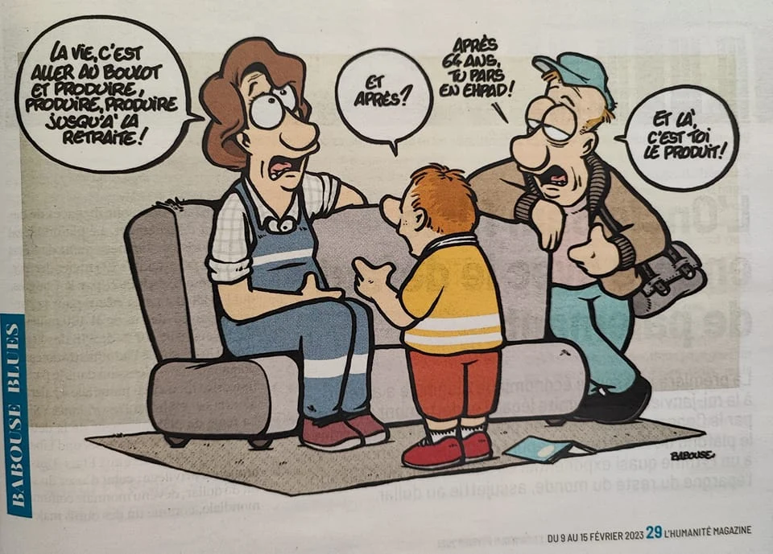

Publication d’archives
Du boulot à .... l'EHPAD 😭
Date indiquée par Facebook · 14 février 2023
Texte conservé avec la publication
Contexte du dossier
La manifestation du 11 à Bressuire est signalée par une vidéo ; les photos de Niort prolongent le même temps fort. Le bilan fédéral publié le 15 avance 2,5 millions de manifestants en France et près de 17 000 dans les Deux-Sèvres : ce sont les estimations de la publication. La référence à Croizat donne un sens au combat, une retraite comme nouvelle étape de vie. Le dessin de Babouse pour L’Humanité magazine, décrit le 14, dénonce à l’inverse un passage direct du travail à l’EHPAD. Le 16, plus de 3 000 personnes sont annoncées à Niort ; la prise de parole se déroule devant la permanence du député Marchive. À Bressuire, une vidéo de portraits des manifestants est signalée le lendemain, sans que leurs propos soient transcrits dans la légende.

Sources
Archive rouge · export Facebook · AR-0002-FB-01755
À lire aussi · Appel solennel à l'attention du Président de la République :